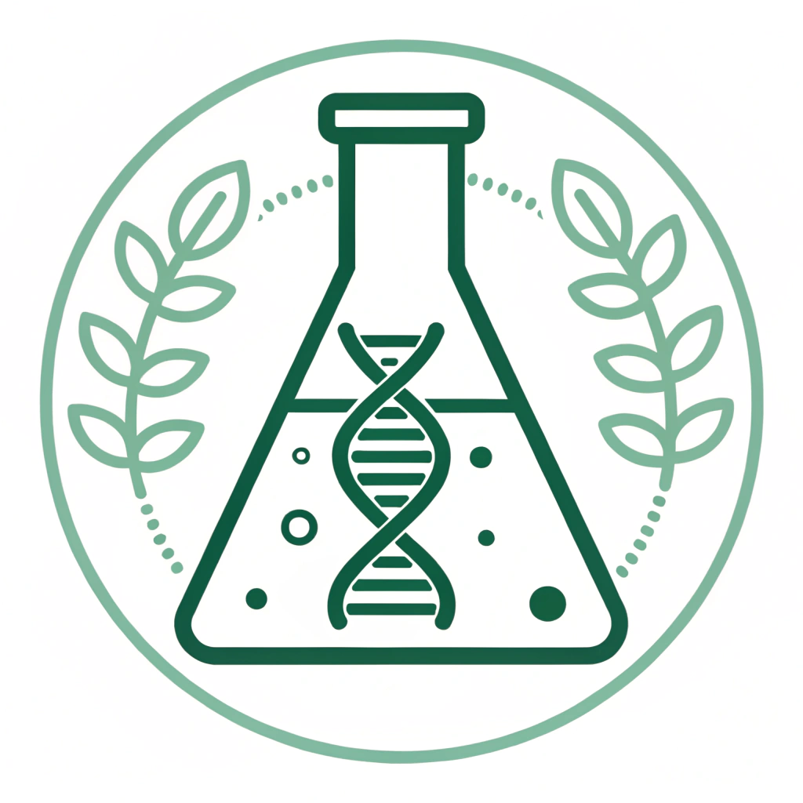

Ciência de Dados e Biotecnologia que Geram Valor
Na Insygro, aplicamos Inteligência Artificial e conhecimento científico avançado para criar soluções inovadoras para o agronegócio e além.
Conheça Nossas SoluçõesNossas Frentes de Atuação
Consultoria Agronômica Avançada
Integramos análises de solo, indicadores bioquímicos e biotecnologia para elevar a saúde e a produtividade da sua lavoura.
Análise de Dados Multissetorial
Nossa expertise em estatística e machine learning transforma dados complexos em insights estratégicos para os setores do agro, saúde e meio ambiente.

P&D em Controle Biológico
Desenvolvemos produtos e processos inovadores para o controle de doenças em plantas, como a antracnose e podridões radiculares, visando uma agricultura mais sustentável.
Nossos Números
+30
Projetos Concluídos
+30
Clientes Satisfeitos
+10
Anos de Experiência
Nosso Compromisso com a Inovação
"Acreditamos que a verdadeira inovação nasce da interseção entre a ciência rigorosa e a aplicação prática. Nosso compromisso é traduzir dados complexos e pesquisa de ponta em soluções claras e resultados tangíveis que impulsionam o futuro do seu negócio."– INSYGRO C&T -